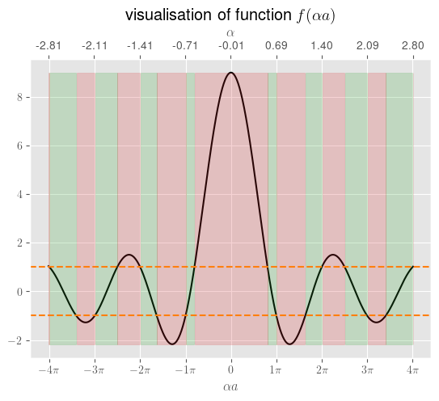
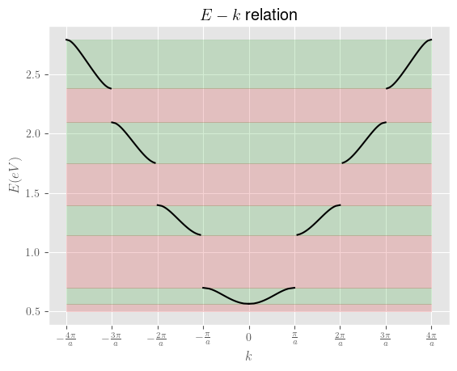

3.1.3 \(k\)空间能带图
函数\(f(\alpha a)\)的可视化
函数\(f(\alpha a)\)被定义为式(3.29):
\begin{align} f(\alpha a) = P\frac{\sin \alpha a}{\alpha a}+\cos \alpha a \end{align}
其中，\(P\)是与晶体原子元素种类相关的参数，\(a\)是晶体的晶格常数。
[1]:
# Authour： Lin Yang @ BIT, 31/12/2023
import numpy as np
import matplotlib.pyplot as plt
def plt_funcf(P,a):
step = 0.01*np.pi
xlst = np.arange(-4.0*np.pi-2*step,4.0*np.pi+2*step,step)
alst = xlst / a
ylst = P*np.sin(xlst) / xlst + np.cos(xlst)
[klst, nlst] = cal_kink(xlst, ylst)
plt.style.use('ggplot')
plt.rcParams.update({
"text.usetex": True,
"font.family": "Helvetica"})
fig, ax1 = plt.subplots()
ax1.plot(xlst, ylst, color='black')
ax1.set_xlabel('$\\alpha a$')
ax1.set_xticks(np.arange(-4*np.pi, 5*np.pi, np.pi))
ax1.set_xticklabels(["$-4\\pi$", "$-3\\pi$", "$-2\\pi$", "$-1\\pi$", "$0$", "$1\\pi$", "$2\\pi$", "$3\\pi$", "$4\\pi$"])
ax2 = ax1.twiny()
ax2.axhline(y=1, color='tab:orange', linestyle='--')
ax2.axhline(y=-1, color='tab:orange', linestyle='--')
ax2.set_xlabel('$\\alpha$')
pos = np.linspace(0, np.size(xlst)-1, 9)
at = [str(format(a, '.2f')) for a in alst[pos.astype(int)]]
ax2.set_xticks(pos)
ax2.set_xticklabels(at)
ax2.fill_between(range(len(ylst)), min(ylst), max(ylst), where=(ylst >= -1) & (ylst <= 1), alpha=0.2, color='tab:green')
ax2.fill_between(range(len(ylst)), min(ylst), max(ylst), where=(ylst < -1) | (ylst > 1), alpha=0.2, color='tab:red')
plt.grid(axis='both')
plt.title('visualisation of function $f(\\alpha a)$')
h = 6.62607015e-34
hbar = h / (2*np.pi)
m0 = 9.1093837015e-31
factor = hbar**2 / (2*m0*1e-20)
J2eV = 6.2415e18
Eg = factor / a**2 * (klst[10]**2 - klst[9]**2) * J2eV
heV = 4.135667696e-15
c = 299792458e9
freq = Eg / heV
lmd = heV * c / Eg
print('第一个禁带在αa值从' + str(format(klst[9], '.3f')) + '到' + str(format(klst[10], '.3f')) + '的范围，换算得禁带宽度为'+ str(format(Eg, '.3f')) + 'eV。')
print('对应的光子频率（波长）为'+str(format(freq, '.0f')) + 'Hz(' + str(format(lmd, '.2f')) + 'nm)。')
plt.show()
return(alst, ylst, nlst)
def cal_kink(x,y):
num = np.size(x)
lstk = np.zeros(16)
lstn = np.zeros(16)
i = 0
for n in range(num-1):
if (y[n] > 1 and y[n+1] < 1):
p1 = y[n]-1
p2 = 1 - y[n+1]
lstk[i] = (x[n]*p2 + x[n+1]*p1) / (p1+p2)
lstn[i] = n+1
i=i+1
if (y[n] < 1 and y[n+1] > 1):
p1 = 1 - y[n]
p2 = y[n+1] - 1
lstk[i] = (x[n]*p2 + x[n+1]*p1) / (p1+p2)
lstn[i] = n
i=i+1
if (y[n] == 1):
lstk[i] = x[n]
lstn[i] = n
i=i+1
if (y[n] > -1 and y[n+1] < -1):
p1 = y[n]+1
p2 = -1 - y[n+1]
lstk[i] = (x[n]*p2 + x[n+1]*p1) / (p1+p2)
lstn[i] = n
i=i+1
if (y[n] < -1 and y[n+1] > -1):
p1 = -1 - y[n]
p2 = y[n+1]+1
lstk[i] = (x[n]*p2 + x[n+1]*p1) / (p1+p2)
lstn[i] = n+1
i=i+1
if (y[n] == -1):
lstk[i] = x[n]
lstn[i] = n
i=i+1
return(lstk, lstn)
假设元素种类参数\(P=8\)，晶格常数参数\(a=4.5\)Å，请问该材料的能带结构。
[2]:
P=8
a=4.5
[alst, flst, nlst] = plt_funcf(P,a)
第一个禁带在αa值从3.142到5.141的范围，换算得禁带宽度为3.115eV。
对应的光子频率（波长）为753306028685801Hz(397.97nm)。

以\(k\)为横轴
[220]:
h = 6.62607015e-34
hbar = h / (2*np.pi)
m0 = 9.1093837015e-31
factor = hbar**2 / (2*m0*1e-20)
P=8
a=4.5
[alst, flst, nlst] = plt_funcf(P,a)
idx0_1 = nlst[8].astype(int)
idx1_1 = nlst[9].astype(int)
idx0_2 = nlst[10].astype(int)
idx1_2 = nlst[11].astype(int)
idx0_3 = nlst[12].astype(int)
idx1_3 = nlst[13].astype(int)
idx0_4 = nlst[14].astype(int)
idx1_4 = nlst[15].astype(int)
klst_1 = np.arccos(flst[idx0_1: idx1_1+1])
elst_1 = alst[idx0_1: idx1_1+1]
klst_1 = np.insert(klst_1, 0, 0)
elst_1 = np.insert(elst_1, 0, 0.563)
klst_2 = 2*np.pi - np.arccos(flst[idx0_2: idx1_2+1])
elst_2 = alst[idx0_2: idx1_2+1]
klst_3 = 2*np.pi + np.arccos(flst[idx0_3: idx1_3+1])
elst_3 = alst[idx0_3: idx1_3+1]
klst_4 = 4*np.pi - np.arccos(flst[idx0_4: idx1_4+1])
elst_4 = alst[idx0_4: idx1_4+1]
klst_1m = -klst_1[::-1]
elst_1m = elst_1[::-1]
klst_2m = -klst_2[::-1]
elst_2m = elst_2[::-1]
klst_3m = -klst_3[::-1]
elst_3m = elst_3[::-1]
klst_4m = -klst_4[::-1]
elst_4m = elst_4[::-1]
fig, ax = plt.subplots()
ax.plot(klst_1, elst_1, color='black')
ax.plot(klst_1m, elst_1m, color='black')
ax.plot(klst_2, elst_2, color='black')
ax.plot(klst_2m, elst_2m, color='black')
ax.plot(klst_3, elst_3, color='black')
ax.plot(klst_3m, elst_3m, color='black')
ax.plot(klst_4, elst_4, color='black')
ax.plot(klst_4m, elst_4m, color='black')
ax.fill_between([-4*np.pi, 4*np.pi], 0.50, 0.563, alpha=0.2, color='tab:red')
ax.fill_between([-4*np.pi, 4*np.pi], 0.563, elst_1[-1], alpha=0.2, color='tab:green')
ax.fill_between([-4*np.pi, 4*np.pi], elst_1[-1], elst_2[0], alpha=0.2, color='tab:red')
ax.fill_between([-4*np.pi, 4*np.pi], elst_2[0], elst_2[-1], alpha=0.2, color='tab:green')
ax.fill_between([-4*np.pi, 4*np.pi], elst_2[-1], elst_3[0], alpha=0.2, color='tab:red')
ax.fill_between([-4*np.pi, 4*np.pi], elst_3[0], elst_3[-1], alpha=0.2, color='tab:green')
ax.fill_between([-4*np.pi, 4*np.pi], elst_3[-1], elst_4[0], alpha=0.2, color='tab:red')
ax.fill_between([-4*np.pi, 4*np.pi], elst_4[0], elst_4[-1], alpha=0.2, color='tab:green')
ax.set_xticks([-4*np.pi, -3*np.pi, -2*np.pi, -1*np.pi, 0, 1*np.pi, 2*np.pi, 3*np.pi, 4*np.pi])
ax.set_xticklabels(['$-\\frac{4\\pi}{a}$', '$-\\frac{3\\pi}{a}$', '$-\\frac{2\\pi}{a}$', '$-\\frac{\\pi}{a}$', '$0$', '$\\frac{\\pi}{a}$', '$\\frac{2\\pi}{a}$', '$\\frac{3\\pi}{a}$', '$\\frac{4\\pi}{a}$'])
ax.set_xlabel('$k$')
ax.set_ylabel('$E(eV)$')
plt.title('$E-k$ relation')
plt.show()
第一个禁带在αa值从3.142到5.141的范围，换算得禁带宽度为3.115eV。
对应的光子频率（波长）为753306028685801Hz(397.97nm)。


[ ]: